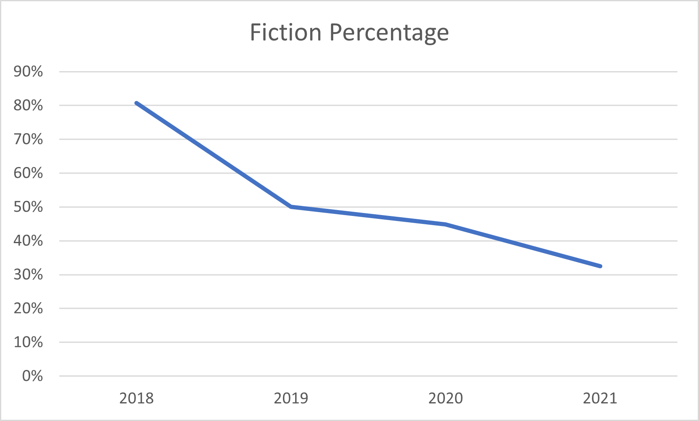
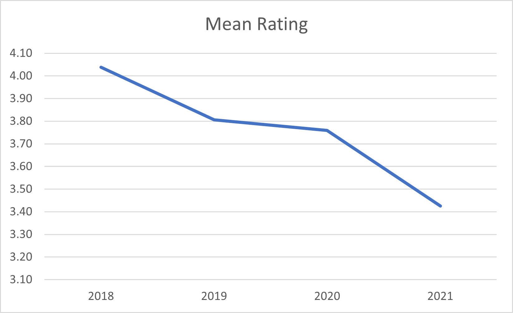
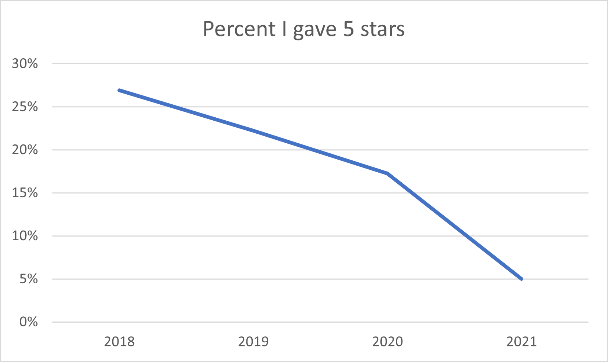
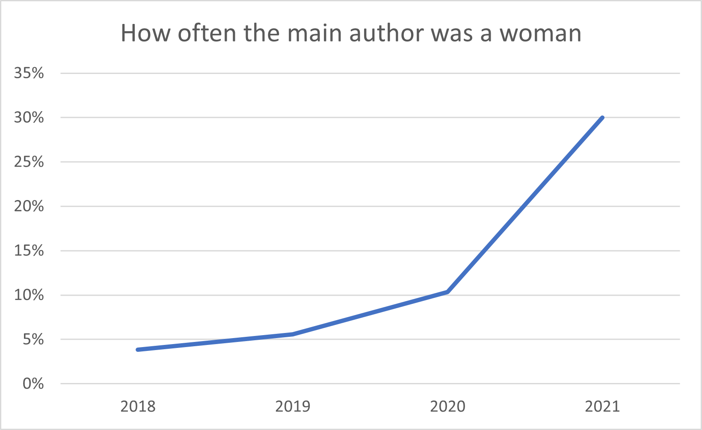
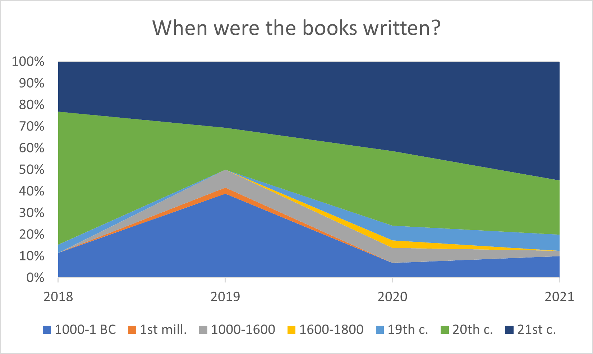
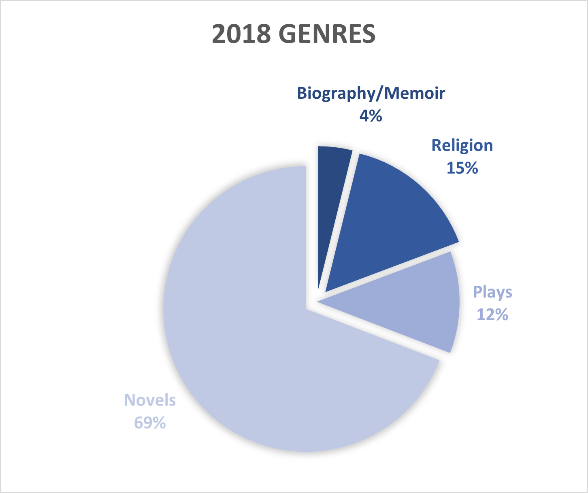
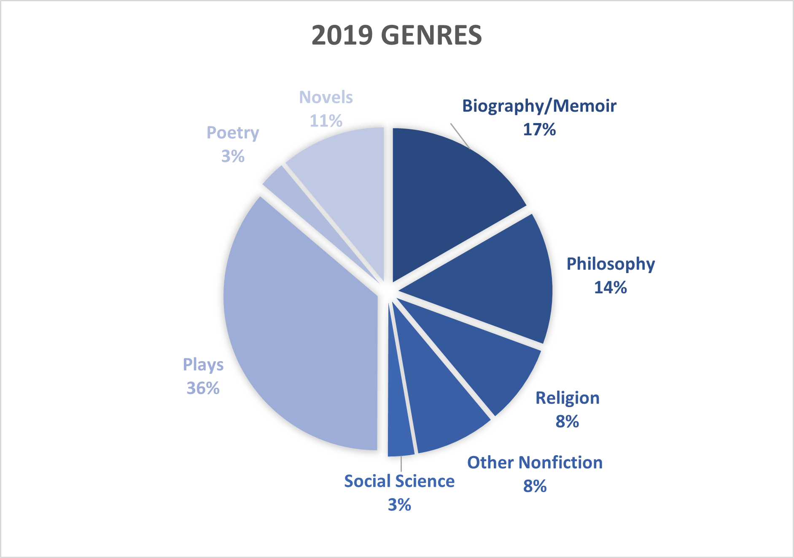
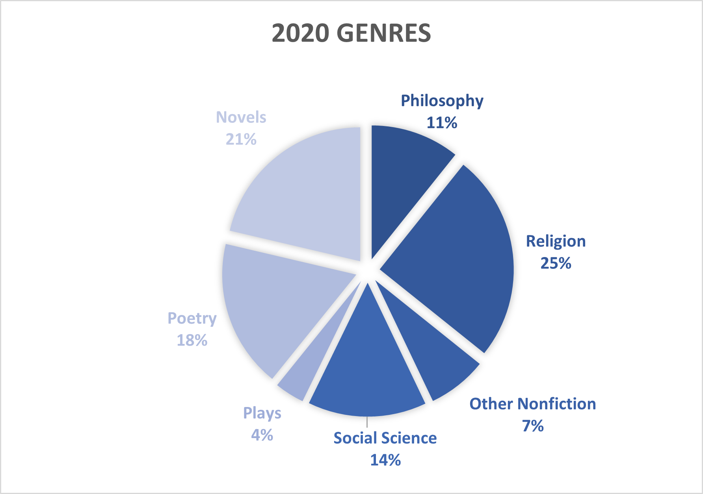
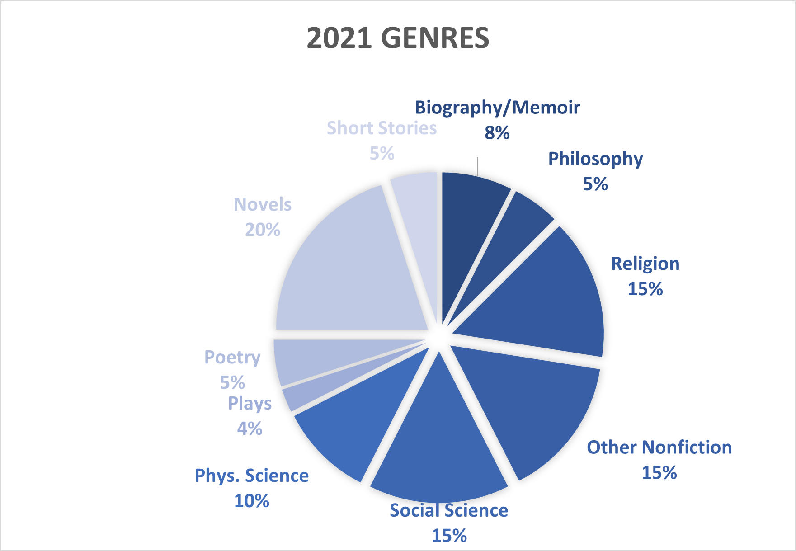

Book Analysis: 2018-2021
The Background
I've read at least 131 books in the last four years. That isn't a huge amount, but it's enought to go to the trouble of making a page to show some of the analysis I did.
Since the start of 2018 I have written about every book I've read, noting a rating out of 5 stars, the genre, identifying information, and when it was written. After 4 years of doing that, I figured it was about time to reward myself with some data analysis. Without further ado....
The Data
To start off, lets look at the number of books I read each year. This isn't a very interesting stat, since lengths varied enormously, especially since I counted each play as one book (not having any better way of dividing them.)
| 2018 | 2019 | 2020 | 2021 | Total |
|---|---|---|---|---|
| 26 | 36 | 29 | 40 | 131 |
The general trend is more reading, which is positive. Not a very strong trend, however. On to some charts.

Figure 1. It's clear that I've been reading a lot less fiction (plays and poetry are included) over the years. I don't think that is ideal--a lot of the books that have stuck with me the longest have been fiction.
Figure 2. I have apparantly been getting harsher in my assessments. The median rating also dropped from 4 stars in 2018-2020 to 3 stars in 2021.
Figure 3. Maybe I'm just spending time with books I don't like as much.
Figure 4. This is interesting. I took a look at whether the principal author was a man or a woman, and found a massive increase in the amount of material written by women I've been reading. In 2018 I read only one book written by a woman (To Kill a Mockingbird) and twenty-seven written by men (only ten male authors, however). By 2021 this was up to 30%.
Figure 5. The Dark Ages are real haha. That big spike in books written in the BC period in 2019 was due to an Athenian playwrights kick.
The Genres
Figure 6. In 2018 (my last full year of high school), I read a ton of fiction, most of which was fantasy and science fiction. The plays were mostly Attic dramatists. My favorite book this year was probably Oathbringer, a fantasy novel.
Figure 7. I really stepped up the variety of my reading this year. The biggest factor in that was probably starting college (especially for the Philosophy segment). The plays this year were mostly the comedies of Aristophanes. My favorite book this year was Class by Paul Fussell, a satire of the American class system.
Figure 8. Novels made a bit of a comeback this year and poetry entered the scene in a significant way. My favorite book this year was If on a winter's night a traveler by Italo Calvino, a modernist novel with an ongoing frame story written in 2nd person (i.e., to the reader).
Figure 9. The complexity of this genre breakdown may be an artifact of choosing the genres to chart based only on the books read in 2021, then applying it to the previous three years. However, it is clear that reading about science reached a new high this year. My favorite book this year was Fidelity by Wendell Berry, a collection of some of his short stories.
The Future
I'd like to read at 40 books in 2022. I don't want the number to decrease and 40 in 2021 wasn't a huge burden. I would like to get the percent of the books written by women up to >40%. And I would like to read at least these five things from my waiting list.
1. Dramas by Eurpides, at least Medea, Bacchae, and Trojan Women
2. Devotions upon Emergent Occasions by John Donne
3. Silence by Shusaku Endo.
4. The Violent Bear It Away by Flannery O'Conner
5. The Death of Ivan Ilyich by Leo Tolstoy